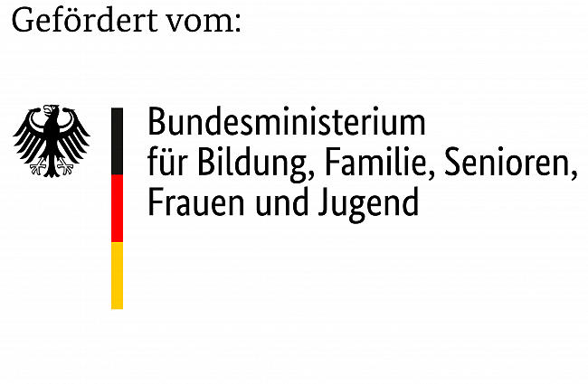
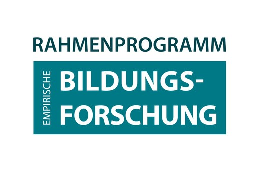

Educational Integration of Refugee Children and Youth in Germany (EDIREG)
The incorporation of refugee children and youth into the education system is presently a paramount concern within German education policy, presenting numerous challenges for the German educational landscape. The research project EDIREG endeavors to examine the impact of individual and familial circumstances, as well as the divergent reception contexts across regions, on the acquisition of competencies, educational transition, and engagement of refugee students at the elementary and secondary level as well as vocational education and training (VET).
Furthermore, the EDIREG project can be accessed through the topic finder on the Federal Ministry of Education, Family Affairs, Senior Citizens, Women and Youth website.
The project was funded by the Federal Ministry of Education, Family Affairs, Senior Citizens, Women and Youth. Grant number: 01JG2107, project duration: 2021–2026.

